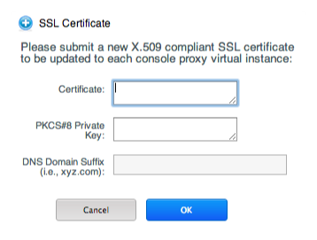
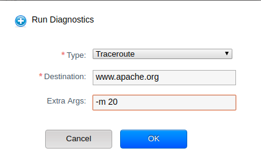

CloudStack uses several types of system virtual machines to perform tasks in the cloud. In general CloudStack manages these system VMs and creates, starts, and stops them as needed based on scale and immediate needs. However, the administrator should be aware of them and their roles to assist in debugging issues.
The System VM Template¶
The System VMs come from a single template. The System VM has the following characteristics:
- Debian 7.8 (“wheezy”), 3.2.0 kernel with the latest security patches from the Debian security APT repository
- Has a minimal set of packages installed thereby reducing the attack surface
- 64-bit for enhanced performance on Xen/VMWare
- pvops kernel with Xen PV drivers, KVM virtio drivers, and VMware tools for optimum performance on all hypervisors
- Xen tools inclusion allows performance monitoring
- Latest versions of HAProxy, iptables, IPsec, and Apache from debian repository ensures improved security and speed
- Latest version of JRE from Sun/Oracle ensures improved security and speed
Changing the Default System VM Template¶
Using the 64-bit template should be use with a System Offering of at least 512MB of memory.
Based on the hypervisor you use, download the 64-bit template from the following location:
As an administrator, log in to the CloudStack UI
Register the 64 bit template.
For example: KVM64bitTemplate
While registering the template, select Routing.
Navigate to Infrastructure > Zone > Settings.
Set the name of the 64-bit template, KVM64bitTemplate, in the ``router.template.kvm`` global parameter.
If you are using a XenServer 64-bit template, set the name in the ``router.template.xen`` global parameter.
Any new virtual router created in this Zone automatically picks up this template.
Restart the 管理服务.
Multiple System VM Support for VMware¶
Every CloudStack zone has single System VM for template processing tasks such as downloading templates, uploading templates, and uploading ISOs. In a zone where VMware is being used, additional System VMs can be launched to process VMware-specific tasks such as taking snapshots and creating private templates. The CloudStack management server launches additional System VMs for VMware-specific tasks as the load increases. The management server monitors and weights all commands sent to these System VMs and performs dynamic load balancing and scaling-up of more System VMs.
Console Proxy¶
The Console Proxy is a type of System Virtual Machine that has a role in presenting a console view via the web UI. It connects the user’s browser to the VNC port made available via the hypervisor for the console of the guest. Both the administrator and end user web UIs offer a console connection.
Clicking a console icon brings up a new window. The AJAX code downloaded into that window refers to the public IP address of a console proxy VM. There is exactly one public IP address allocated per console proxy VM. The AJAX application connects to this IP. The console proxy then proxies the connection to the VNC port for the requested VM on the Host hosting the guest.
Note
The hypervisors will have many ports assigned to VNC usage so that multiple VNC sessions can occur simultaneously.
There is never any traffic to the guest virtual IP, and there is no need to enable VNC within the guest.
The console proxy VM will periodically report its active session count to the 管理服务. The default reporting interval is five seconds. This can be changed through standard 管理服务 configuration with the parameter consoleproxy.loadscan.interval.
Assignment of guest VM to console proxy is determined by first determining if the guest VM has a previous session associated with a console proxy. If it does, the 管理服务 will assign the guest VM to the target Console Proxy VM regardless of the load on the proxy VM. Failing that, the first available running Console Proxy VM that has the capacity to handle new sessions is used.
Console proxies can be restarted by administrators but this will interrupt existing console sessions for users.
Using a SSL Certificate for the Console Proxy¶
By default, the console viewing functionality uses plaintext HTTP. In any production environment, the console proxy connection should be encrypted via SSL at the mininum.
A CloudStack administrator has 2 ways to secure the console proxy communication with SSL:
- Set up a SSL wild-card certificate and domain name resolution
- Set up SSL certificate for specific FQDN and configure load-balancer
Changing the Console Proxy SSL Certificate and Domain¶
The administrator can configure SSL encryption by selecting a domain and uploading a new SSL certificate and private key. The domain must run a DNS service that is capable of resolving queries for addresses of the form aaa-bbb-ccc-ddd.your.domain to an IPv4 IP address in the form aaa.bbb.ccc.ddd, for example, 202.8.44.1. To change the console proxy domain, SSL certificate, and private key:
Set up dynamic name resolution or populate all possible DNS names in your public IP range into your existing DNS server with the format aaa-bbb-ccc-ddd.consoleproxy.company.com -> aaa.bbb.ccc.ddd.
Note
In these steps you will notice consoleproxy.company.com -For security 最佳实践, we recommend creating a wildcard SSL certificate on a separate subdomain so in the event that the certificate is compromised, a malicious user cannot impersonate a company.com domain.
Generate the private key and certificate signing request (CSR). When you are using openssl to generate private/public key pairs and CSRs, for the private key that you are going to paste into the CloudStack UI, be sure to convert it into PKCS#8 format.
Generate a new 2048-bit private key
openssl genrsa -des3 -out yourprivate.key 2048
Generate a new certificate CSR. Ensure the creation of a wildcard certificate, eg
*.consoleproxy.company.comopenssl req -new -key yourprivate.key -out yourcertificate.csr
Head to the website of your favorite trusted Certificate Authority, purchase an SSL certificate, and submit the CSR. You should receive a valid certificate in return
Convert your private key format into PKCS#8 encrypted format.
openssl pkcs8 -topk8 -in yourprivate.key -out yourprivate.pkcs8.encrypted.key
Convert your PKCS#8 encrypted private key into the PKCS#8 format that is compliant with CloudStack
openssl pkcs8 -in yourprivate.pkcs8.encrypted.key -out yourprivate.pkcs8.key
In the Update SSL Certificate screen of the CloudStack UI, paste the following:
- The certificate you’ve just generated.
- The private key you’ve just generated.
- The desired domain name, prefixed with
*.; for example,*.consoleproxy.company.com

This stops all currently running console proxy VMs, then restarts them with the new certificate and key. Users might notice a brief interruption in console availability.
The 管理服务 generates URLs of the form “aaa-bbb-ccc-ddd.consoleproxy.company.com” after this change is made. The new console requests will be served with the new DNS domain name, certificate, and key.
Uploading ROOT CA and Intermediate CA¶
If you need to upload custom certificate with ROOT CA and intermediate CA, you can find more details here: https://cwiki.apache.org/confluence/display/CLOUDSTACK/Procedure+to+Replace+realhostip.com+with+Your+Own+Domain+Name
IMPORTANT NOTES:
In order to avoid errors and problems while uploading custom certificates, please check following:
1. While doing URL encoding of ROOT CA and any Intermediate CA, be sure that the plus signs (“+”) inside certificates are not replaced by space (” “), because some URL/string encoding tools tend to do that.
2. If you are renewing certificates it might happen you need to upload new ROOT CA and Intermediate CA, together with new Server Certificate and key. In this case please be sure to use same names for certificates during API upload of certificate, example:
http://123.123.123.123:8080/client/api?command=uploadCustomCertificate&…&name=root1… http://123.123.123.123:8080/client/api?command=uploadCustomCertificate&…&name=intermed1…
Here names are “root1” and “intermed1”. If you used other names previously, please check the cloud.keystore table to obtain used names.
If you still have problems and folowing errors in management.log while destroying CPVM:
- Unable to build keystore for CPVMCertificate due to CertificateException
- Cold not find and construct a valid SSL certificate
that means that still some of the Root/intermediate/server certificates or the key is not in a good format, or incorrectly encoded or multiply Root CA/Intemediate CA present in database by mistake.
Other way to renew Certificates (Root,Intermediates,Server certificates and key) - although not recommended unless you fill comfortable - is to directly edit the database, while still respect the main requirement that the private key is PKCS8 encoded, while Root CA, Intemediate and Server certificates are still in default PEM format (no URL encoding needed here). After editing the database, please restart management server, and destroy SSVM and CPVM after that, so the new SSVM and CPVM with new certificates are created.
Load-balancing Console Proxies¶
An alternative to using dynamic DNS or creating a range of DNS entries as described in the last section would be to create a SSL certificate for a specific domain name, configure CloudStack to use that particular FQDN, and then configure a load balancer to load balance the console proxy’s IP address behind the FQDN. As the functionality for this is still new, please see https://cwiki.apache.org/confluence/display/CLOUDSTACK/Realhost+IP+changes for more details.
Virtual Router¶
The virtual router is a type of System Virtual Machine. The virtual router is one of the most frequently used service providers in CloudStack. The end user has no direct access to the virtual router. Users can ping the virtual router and take actions that affect it (such as setting up port forwarding), but users do not have SSH access into the virtual router.
There is no mechanism for the administrator to log in to the virtual router. Virtual routers can be restarted by administrators, but this will interrupt public network access and other services for end users. A basic test in debugging networking issues is to attempt to ping the virtual router from a guest VM. Some of the characteristics of the virtual router are determined by its associated system service offering.
Configuring the Virtual Router¶
You can set the following:
- IP range
- Supported network services
- Default domain name for the network serviced by the virtual router
- Gateway IP address
- How often CloudStack fetches network usage statistics from CloudStack virtual routers. If you want to collect traffic metering data from the virtual router, set the global configuration parameter router.stats.interval. If you are not using the virtual router to gather network usage statistics, set it to 0.
Upgrading a Virtual Router with System Service Offerings¶
When CloudStack creates a virtual router, it uses default settings which are defined in a default system service offering. See “System Service Offerings”. All the virtual routers in a single guest network use the same system service offering. You can upgrade the capabilities of the virtual router by creating and applying a custom system service offering.
- Define your custom system service offering. See “Creating a New System Service Offering”. In System VM Type, choose Domain Router.
- Associate the system service offering with a network offering. See “Creating a New Network Offering”.
- Apply the network offering to the network where you want the virtual routers to use the new system service offering. If this is a new network, follow the steps in Adding an Additional Guest Network on page 66. To change the service offering for existing virtual routers, follow the steps in “Changing the Network Offering on a Guest Network”.
最佳实践 for Virtual Routers¶
WARNING: Restarting a virtual router from a hypervisor console deletes all the iptables rules. To work around this issue, stop the virtual router and start it from the CloudStack UI.
Warning
Do not use the destroyRouter API when only one router is available in the network, because restartNetwork API with the cleanup=false parameter can’t recreate it later. If you want to destroy and recreate the single router available in the network, use the restartNetwork API with the cleanup=true parameter.
Service Monitoring Tool for Virtual Router¶
Various services running on the CloudStack virtual routers can be
monitored by using a Service Monitoring tool. The tool ensures that
services are successfully running until CloudStack deliberately disables
them. If a service goes down, the tool automatically restarts the
service, and if that does not help bringing up the service, an alert as
well as an event is generated indicating the failure. A new global
parameter, network.router.enableservicemonitoring, has been
introduced to control this feature. The default value is false, implies,
monitoring is disabled. When you enable, ensure that the Management
Server and the router are restarted.
Monitoring tool can help to start a VR service, which is crashed due to an unexpected reason. For example:
- The services crashed due to defects in the source code.
- The services that are terminated by the OS when memory or CPU is not sufficiently available for the service.
Note
Only those services with daemons are monitored. The services that are failed due to errors in the service/daemon configuration file cannot be restarted by the Monitoring tool. VPC networks are not supported.
The following services are monitored in a VR:
- DNS
- HA Proxy
- SSH
- Apache Web Server
The following networks are supported:
Isolated Networks
Shared Networks in both Advanced and Basic zone
Note
VPC networks are not supported
This feature is supported on the following hypervisors: XenServer, VMware, and KVM.
Enhanced Upgrade for Virtual Routers¶
Upgrading VR is made flexible. The CloudStack administrators will be able to control the sequence of the VR upgrades. The sequencing is based on Infrastructure hierarchy, such as by Cluster, Pod, or Zone, and Administrative (Account) hierarchy, such as by Tenant or Domain. As an administrator, you can also determine when a particular customer service, such as VR, is upgraded within a specified upgrade interval. Upgrade operation is enhanced to increase the upgrade speed by allowing as many upgrade operations in parallel as possible.
During the entire duration of the upgrade, users cannot launch new services or make changes to an existing service.
Additionally, using multiple versions of VRs in a single instance is supported. In the Details tab of a VR, you can view the version and whether it requires upgrade. During the 管理服务 upgrade, CloudStack checks whether VR is at the latest version before performing any operation on the VR. To support this, a new global parameter, ``router.version.check``, has been added. This parameter is set to true by default, which implies minimum required version is checked before performing any operation. No operation is performed if the VR is not at the required version. Services of the older version VR continue to be available, but no further operations can be performed on the VR until it is upgraded to the latest version. This will be a transient state until the VR is upgraded. This will ensure that the availability of VR services and VR state is not impacted due to the 管理服务 upgrade.
The following service will be available even if the VR is not upgraded. However, no changes for any of the services can be sent to the VR, until it is upgraded:
- SecurityGroup
- UserData
- DHCP
- DNS
- LB
- Port Forwarding
- VPN
- Static NAT
- Source NAT
- Firewall
- Gateway
- NetworkACL
Supported Virtual Routers¶
- VR
- VPC VR
- Redundant VR
Upgrading Virtual Routers¶
Download the latest System VM template.
Download the latest System VM to all the primary storage pools.
Upgrade the 管理服务.
Upgrade CPVM and SSVM either from the UI or by using the following script:
# cloudstack-sysvmadm -d <IP address> -u cloud -p -sEven when the VRs are still on older versions, existing services will continue to be available to the VMs. The 管理服务 cannot perform any operations on the VRs until they are upgraded.
Selectively upgrade the VRs:
Log in to the CloudStack UI as the root administrator.
In the left navigation, choose Infrastructure.
On Virtual Routers, click View More.
All the VRs are listed in the Virtual Routers page.
In Select View drop-down, select desired grouping based on your requirement.
You can use either of the following:
- Group by zone
- Group by pod
- Group by cluster
- Group by account
Click the group which has the VRs to be upgraded.
For example, if you have selected Group by zone, select the name of the desired zone.
Click the Upgrade button to upgrade all the VRs.

Click OK to confirm.
Secondary Storage VM¶
In addition to the hosts, CloudStack’s Secondary Storage VM mounts and writes to secondary storage.
Submissions to secondary storage go through the Secondary Storage VM. The Secondary Storage VM can retrieve templates and ISO images from URLs using a variety of protocols.
The secondary storage VM provides a background task that takes care of a variety of secondary storage activities: downloading a new template to a Zone, copying templates between Zones, and snapshot backups.
The administrator can log in to the secondary storage VM if needed.
Troubleshoot networks from System VMs¶
For troubleshooting of network issues in CloudStack hosted networks, CloudStack allows the administrator to execute network-utility commands (ping, traceroute or arping) remotely on system VMs.
To run either a ping, traceroute or arping through the CloudStack UI:
- As an administrator, log in to the CloudStack UI.
- Navigate to Infrastructure > System VMs or Virtual Routers.
- Click on the Run Diagnostics button.
- A form will pop up similar to this;
- 
- Fill in the details and click OK.
The Extra Args parameter is for specifying command line optional parameters as one would when executing any of the tools from the terminal or command line.
The supported versions are Debian 9 based since system VMs are built using the same Debian 9 based templates.
Non-Alphanumeric characters (metacharacters) are not allowed for this parameter except for the “-“ and the “.”. Any metacharacter supplied will immediately result in an immediate termination of the command and report back to the operator that an illegal character was passed